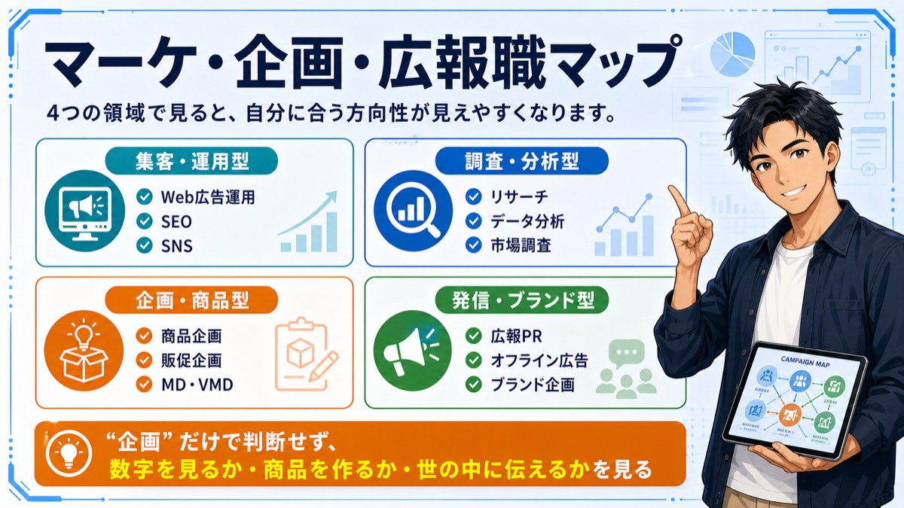
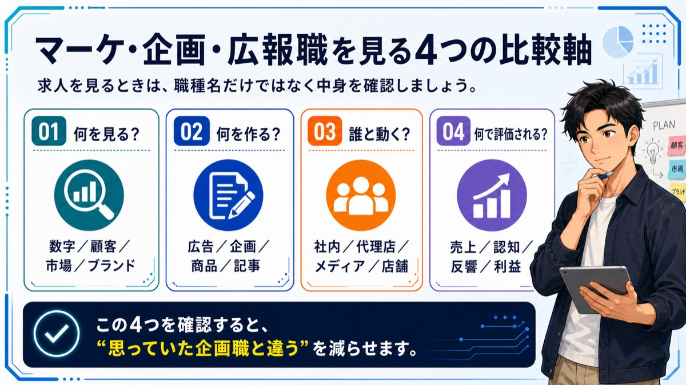
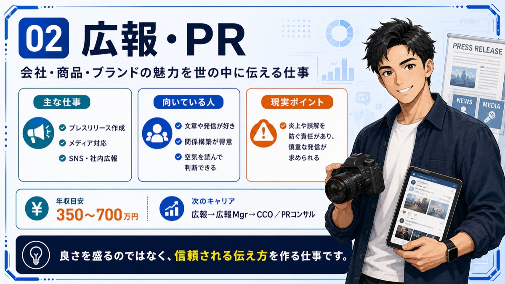
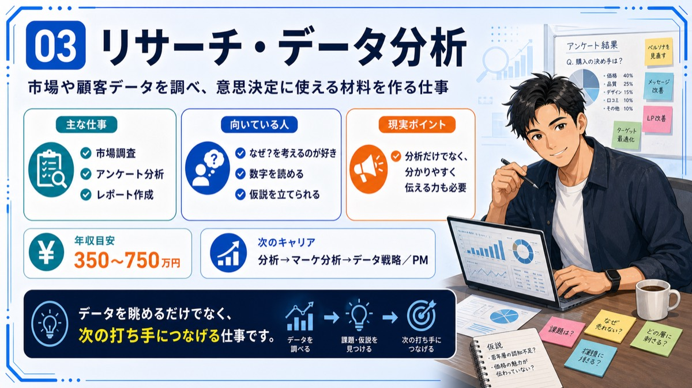
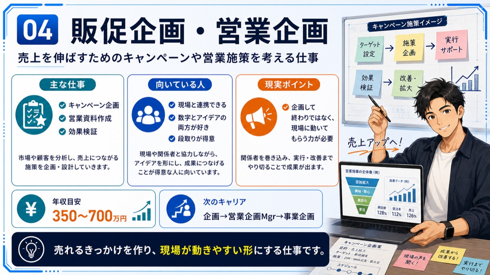
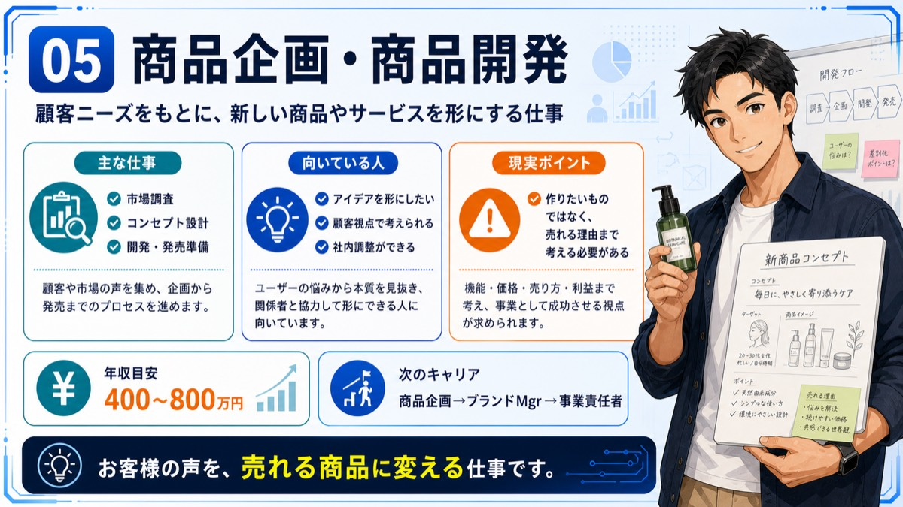
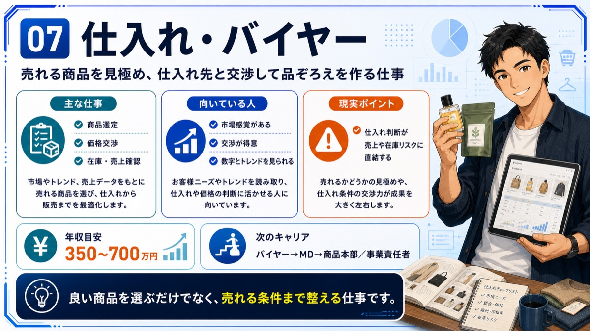
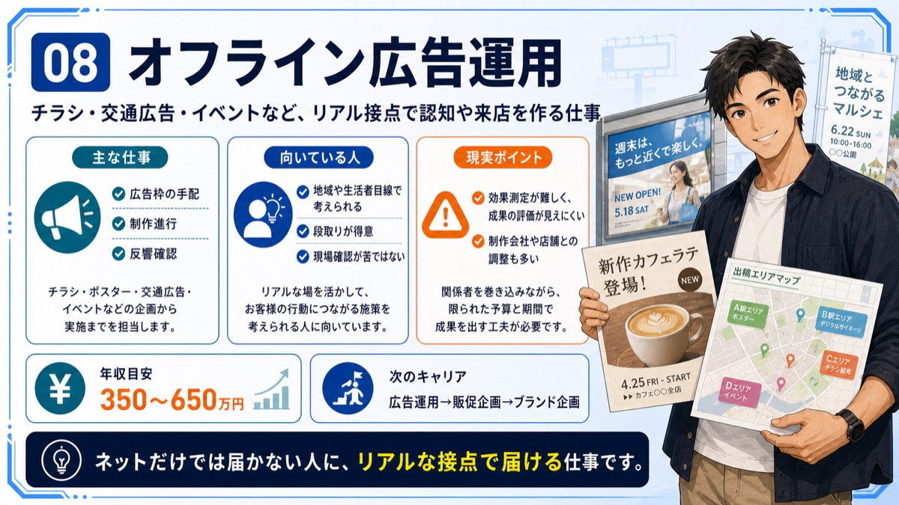
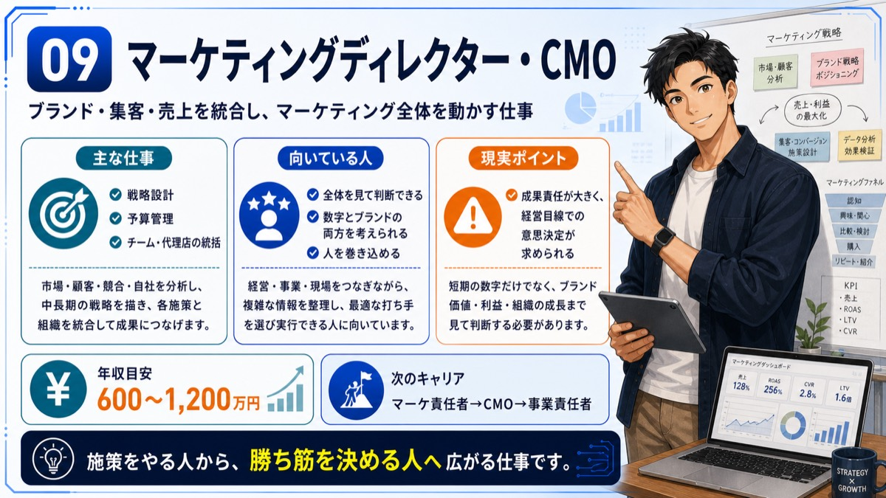
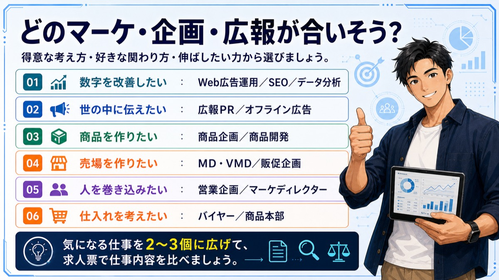

Job Lesson
マーケティング企画広報職を理解する
マーケティング・企画・広報は、商品や会社の価値を必要な人へ届ける仕事です。










次に見るもの
マーケティング企画広報職に興味がある方は、面接前に回答の組み立て方も確認してください。
Job Lesson
マーケティング・企画・広報は、商品や会社の価値を必要な人へ届ける仕事です。










マーケティング企画広報職に興味がある方は、面接前に回答の組み立て方も確認してください。